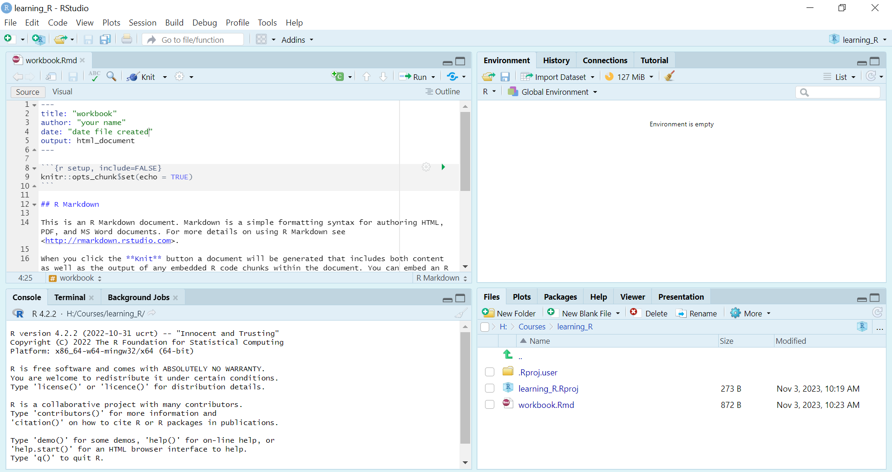
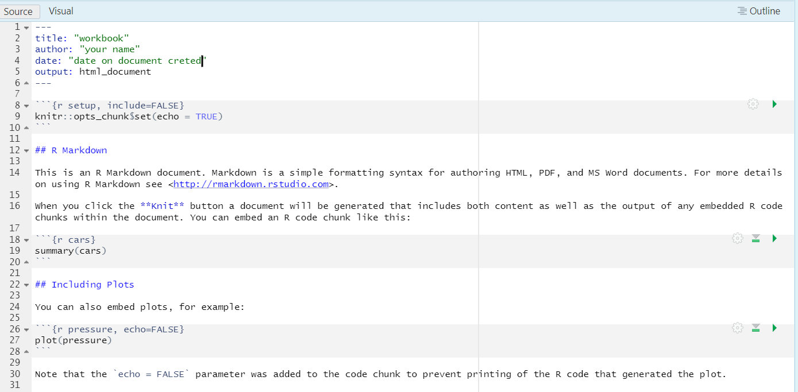

# setwd("Drive:/path/to_your/directory/learning_R")3 R Markdown Basics
3.1 What is R Markdown?
R Markdown is a file format for making dynamic documents with R. An R Markdown document is written in markdown (an easy-to-write plain text format) and contains chunks of embedded R code.
The R Markdown is then processed by the knitr package, which executes all of the R code chunks and creates a new markdown (.md) document which includes the code and its output. This markdown document can then be rendered into a variety of formats including HTML, PDF, MS Word, scientific articles, websites, and more. You can even use R Markdown to build interactive documents and slideshows.
R Markdown documents are fully reproducible and support dozens of static and dynamic output formats. When you use R Markdown, you’ll have the opportunity to flex your creativity and your technical skills. The possibilities are nearly endless.
R Markdown is a variant of Markdown that has embedded R code chunks, to be used with knitr to make it easy to create reproducible web-based reports. R Markdown files are designed to be used with the RStudio IDE, allowing you to quickly create documents and presentations that are fully reproducible.
3.2 What is R Script?
- R Script is a plain-text file that contains R code that you intend to use again later - to run the same analysis, to re-create a plot, etc. Unlike an R Markdown document, an R Script does not contain text in addition to the R code. It’s simply a list of commands that you would otherwise enter at the R command prompt. R Scripts are a great way to ensure that your analyses are reproducible. They also make it easy to re-use your code in other projects and share your code with others. R script files are designed to be used with the RStudio IDE, allowing you to quickly create documents and presentations that are fully reproducible. In this course we will work with R Markdown files.
3.3 Creat an R Markdown file
In this section, you will learn how to create a new R Markdown file, and save it with a specific name in a designated directory. This is a fundamental skill that will help you keep your work organized as you learn R.
- Instructions
- Launch RStudio:
- Now that the RStudio is open on your computer.
- Create a New Directory:
- In the Files pane (bottom-right by default), navigate to a location on your computer where you’d like to save your work.
- Click on the “New Folder” icon, and name the new folder
learning_R. - Please try to avoid creating the folder on a remote drive as it will make it much slower to work with. Make folder on your computer in Documents or Drive of choice.
- Set Working Directory:
- Once the folder is created, set it as your working directory by clicking on “Session” on top pane, then “Set As Working Directory” -> Choose directory and locate the directory
learning_Rand press OK.
- Once the folder is created, set it as your working directory by clicking on “Session” on top pane, then “Set As Working Directory” -> Choose directory and locate the directory
OR by typing in the console without #
- Create a New R Markdown file:
- Go to the toolbar at the top of the RStudio window.
- Click on “File”, then “New File”, and select “R Markdown”.
- Save the R Markdown file:
- Now, save the new R Markdown by clicking on “File” in the toolbar, then “Save” (or by pressing
Ctrl + Son your keyboard). - In the dialog box that appears, navigate to the
learning_Rdirectory that you created. - Name your file
workbookand click “Save”. - It will be saved with file extension
.Rmd
- Now, save the new R Markdown by clicking on “File” in the toolbar, then “Save” (or by pressing
- Verify the file is created:
- In the Files pane, navigate to the
learning Rdirectory. - Confirm that your
workbook.Rmdfile is saved there.
- In the Files pane, navigate to the
Note
- When working with R, it’s important to develop the habit of using underscores (_) instead of spaces when naming files and folders.
- In this module, we will work in a R Markdown file. We won’t be creating an R Script at this stage.
- R Markdown is incredibly useful at this point, functioning much like a notebook where you can explore and play around with data.
- Going forward, ensure you follow the steps and exercises in order, as each step typically builds upon the previous one. Skipping ahead may result in missing crucial information and getting errors.
3.4 Read and Reflect
- How does organizing your files into designated directories help streamline your workflow?
- Why is it important to give meaningful names to your R Scripts?
- How is it related to your research directories and file names, do you also write names like results1, results2, results3, results final, results commented PI and results4, results final2.
Take a moment to reflect on these questions. As you continue to learn R, maintaining an organized workspace will become increasingly important.
Note
Want to learn more about the naming conventions in R?
Check out this for naming: files and directories and this for Objects
3.5 Using the R Markdown file
- If R Markdown file workbook.Rmd that you recently created is not already open, you can open it by clicking on its name in the file pane.
When the file is open the the RStudio interface look like this.

- And the
workbooklooks like this. Does it in your case?

Read the content of the file and then delete the everything below ## R Markdown
Let’s proceed to complete Exercise 3 inside the workbook.Rmd file.
3.6 Excercise 1
Discovering Data Types
Inside the opened workbook place your cursor below the ## R Markdown
To insert a code chunk, press
Ctrl + Alt + I, or alternatively, you can click on “Code” at the top “on the Toolbar” and then select “Insert Chunk”.
Use the class() function to discover the data type of a variable:
Note
In R, the class() function is used to determine the data type of an object. This function is particularly useful when working with different types of data structures in R, such as vectors, matrices, data frames, and lists. It helps you understand how R is interpreting your data, which is crucial for effective data manipulation and analysis
Tip
Recall that we created the objects num1, char1, and log1 earlier in Section 2.4. If they are visible in your environment pane, employ the class function to ascertain the type of data they contain. If they are not visible, recreate them by rerunning the code from sections 2.4.1 to 2.4.3.
When executing code in R Markdown, you can either click the green arrow button at the top right corner of the code chunk to run the entire code chunk or position your cursor on the specific line of code you wish to run and press Ctrl + Enter, which will execute only that particular line of code.
class(num1) # Output: "numeric"[1] "numeric"class(char1) # Output: "character"[1] "character"class(log1) # Output: "logical"[1] "logical"3.7 Excercise 2
- Create a numeric variable and perform a basic arithmetic operation.
- Create a character variable containing your name.
- Create a logical variable by comparing two numbers.
- perform this inside the workbook file
Variable names to avoid
You have the flexibility to choose any name for your variables. However, it is recommended to refrain from utilizing names of functions and objects from base R to prevent any potential conflicts or unexpected behavior. Here are some examples to consider:
cdfmeansumdatamatrixvectorlistfactorlibrary
These names are commonly used in R for various purposes, and using them as variable names can lead to confusion or errors in your code. It’s generally a good practice to choose descriptive and unique names for your variables to avoid any issues.
Excercise 2: Click to see solution
numeric_variable <- 10
arithmetic_result <- numeric_variable + 5 # Adding 5 to the numeric_variablename_variable <- "Your Name"comparison_variable <- (10 > 5) # Checking if 10 is greater than 5- In this solution:
- A numeric variable named
numeric_variableis created and assigned a value of 10. A basic arithmetic operation (addition) is then performed on this variable. - A character variable named
name_variableis created and assigned the value “Your Name”. - A logical variable named
comparison_variableis created by comparing two numbers using the greater than (>) operator.